File System
CPU 时间被抽象为 process
Memory 被抽象为 arrays
Storage 被抽象为文件系统
文件系统
- File 放在 Track/sector 中
- 对用户进程来说
- File system provides coherent view of a group of files
- File: a contiguous block of bytes (Unix)
- 文件系统提供保护
File
感觉这前半部分都不怎么重要啊
File concept
File is a contiguous logical space for storing information
database, audio, video, web pages...
- different types of file
- data: character, binary, and application-specific
- program
- special one: proc file system - use file-system interface to retrieve system information
- File Attributes
- Name – only information kept in human-readable form
- Identifier – unique tag (number) identifies file within file system
- Typec– needed for systems that support different types
- Location – pointer to file location on device
- Size– current file size
- Protection – controls who can do reading, writing, executing
- Time, date, and user identification – data for protection, security, and usage monitoring
- Information about files are kept in the directory structure, which is maintained on the disk
- Many variations, including extended file attributes such as file checksum
File Operations
- create - space & directory entry
- open - return a handler for other operations
- read/write: need to maintain a pointer
- seek - reposition within file
- close
- delete - release space
- Hardlink: maintain a counter - delete the file until the last link is deleted
- truncate: empty a file but maintains its attributes
open files
- Several data are needed to manage open files
- Open-file table: tracks open files
- File pointer: pointer to last read/write location, per process that has the file open
- File-open count: counter of number of times a file is open – to allow removal of data from open-file table when last processes closes it
- Disk location of the file: cache of data access information
- Access rights: per-process access mode information
- 一些文件系统提供锁
- Shared lock
- exclusive lock
- 两种机制：mandatory lock/advisory lock
File Structure
- No structure: a stream of bytes or words
- Linux dumps
- Simple record structure: Lines of records, fixed length or variable length
- database
- Complex structures
- Word document, relocatable program file
一般用户程序负责解析文件结构
Accessmethods
- Sequential access
- Direct access
- index for the file points to blocks - Based on direct-access method
- first search the index and then use the pointer to access the block
- We may use multiple layers of index
Directory structure
disk 可以分成小块，各自有不同的文件系统，也可以没有文件系统（数据库喜欢）
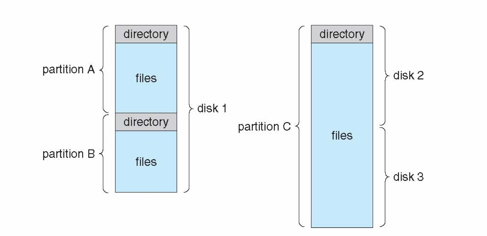
Directory is a collection of nodes containing information about all files（也在 disk 上
Operations Performed on Directory
- Create a file: new files need to be created and added to directory
- Delete a file: remove a file from directory
- List a directory: list all files in directory
- Search for a file: pattern matching
- Traverse the file system: access every directory and file within a directory
Directory Organization
- 目标 - Efficiency（快速找到某个文件） & Naming（用户使用方便）
- 两个用户可以有命名相同，实际不同的文件，一个文件页可以有很多名字
- Single-Level Directory
- A single directory for all users
- Naming problems and grouping problems
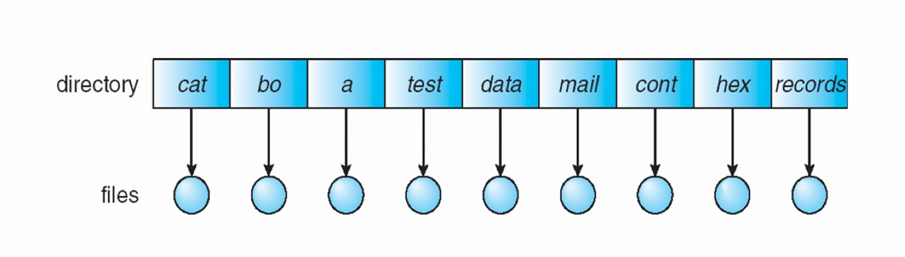
- Two-Level Directory
- Separate directory for each user
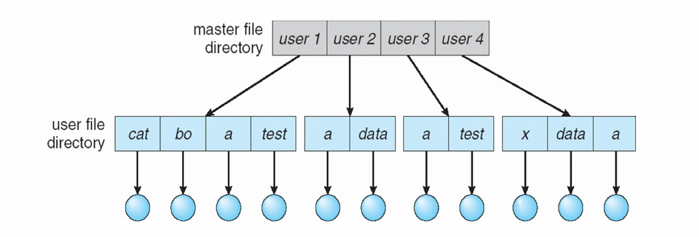
- Separate directory for each user
- Tree-Structured Directories
- efficient in searching, can group files, convenient naming
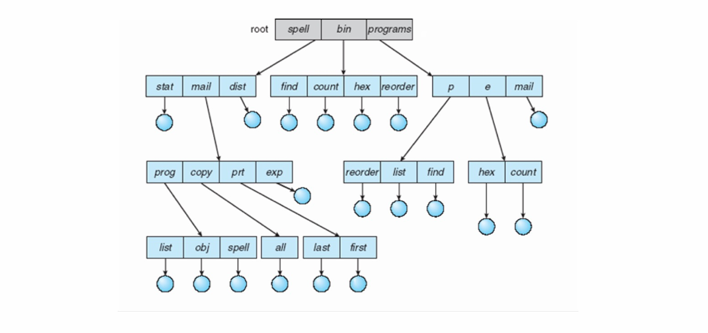
- efficient in searching, can group files, convenient naming
- Acyclic Graph Directories
- 允许别名
- dangling pointers 问题：删去某个结点，可能访问不了其他结点
- Solution: back pointers/reference counter
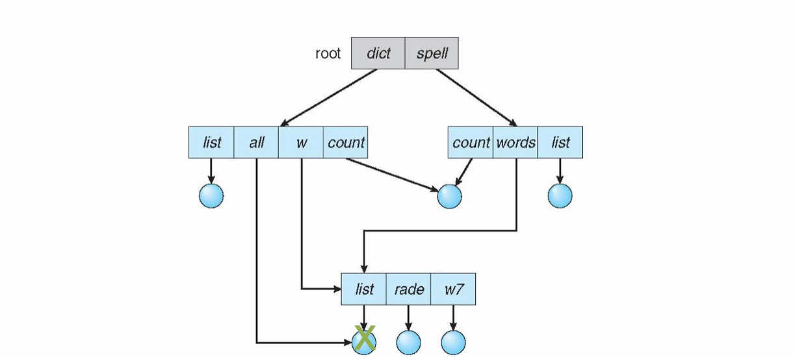
- Share files - hard link & soft link
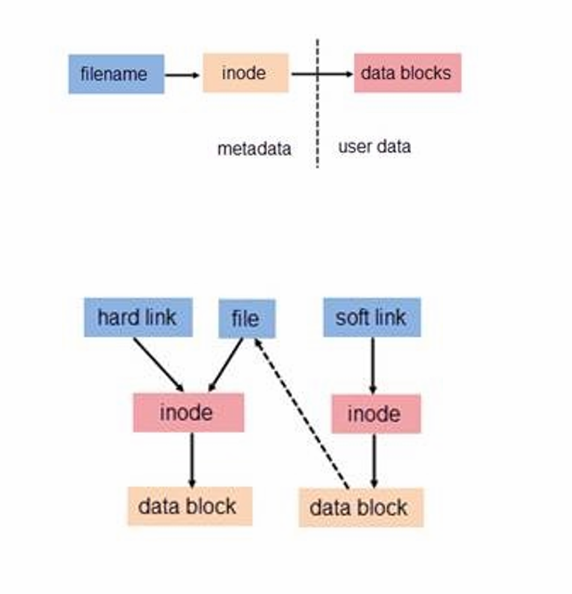
- General Graph Directory
- Allowing arbitrary links may generate cycles in the directory structure
- Solution: garbage collection or cycle detection
File System Mounting
不懂，感觉没讲啊
File Sharing
- 需要保护
- User IDs identify users, allowing protections to be per-user
- Group IDs allow users to be in groups, permitting group access rights
- 分布式系统 - 通过网络 share（NFS for UNIX，CIFS for WIN
Protection
文件作者需要规定谁能对文件做什么
- ACL - Assign each file and directory with an access control list (ACL)
- Advantages: fine-grained control
- Disadvantages
- How to construct the list
- How to store the list in directory
File system structure (layers)
历史 - 又贵又小
- File is a logical storage unit for a collection of related information
- There are many file systems; OS may support several simultaneously
- Linux has ext2/3/4, reiser FS/4, btrfs…
- Windows has FAT, FAT32, NTFS…
- New ones still arriving – ZFS, googlefs, oracle ASM, FUSE
- FS provides user/program interface to storage, mapping logical to physical
- File system is usually implemented and organized into layers
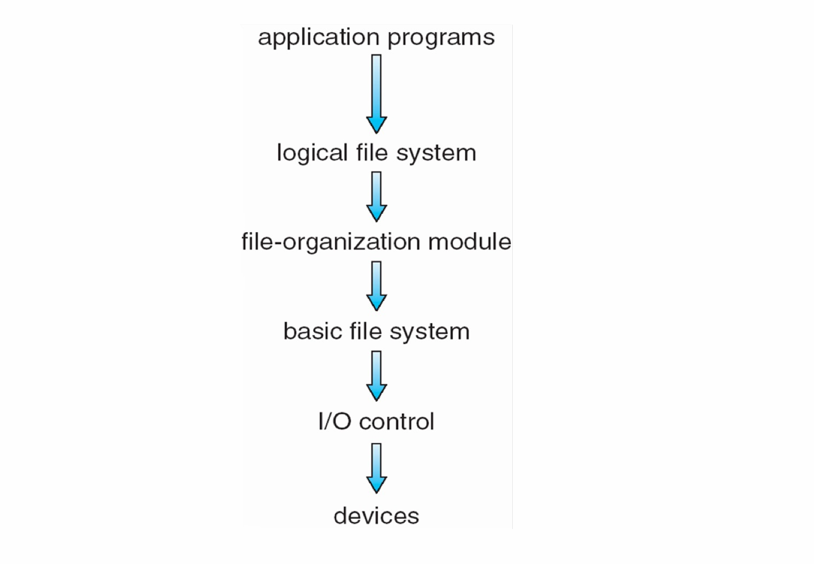
Input from above, Output to below
- Logical file system
- meta-data
- stores the directory structure
- stores File Control Block - FCB
- File-organization module
- manages free space
- translation logical to physical file blocks
- Basic file system
- buffers (caches)
- I/O Control
layer reducing complexity but decrease performance
File system implementation
On-disk structure, in-memory structure
on-disk structures - 断电不易失
- An optional boot control block
- A volume control block
- A directory
- per-file FCB
in-memory structures - 断电易失
- mount table - one entry per mounted volume
- directory cache for fast path translation
- global open-file table - inode
- per-process open-file table - index
- buffers
File control block – storage structure consisting of information about a file
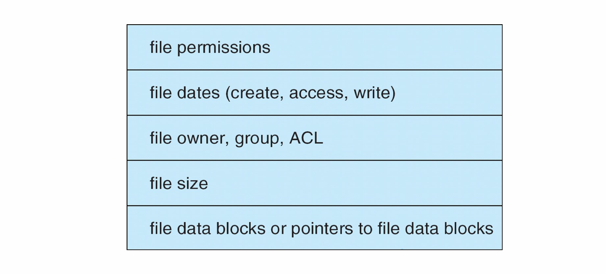
inode (Unix FCB)
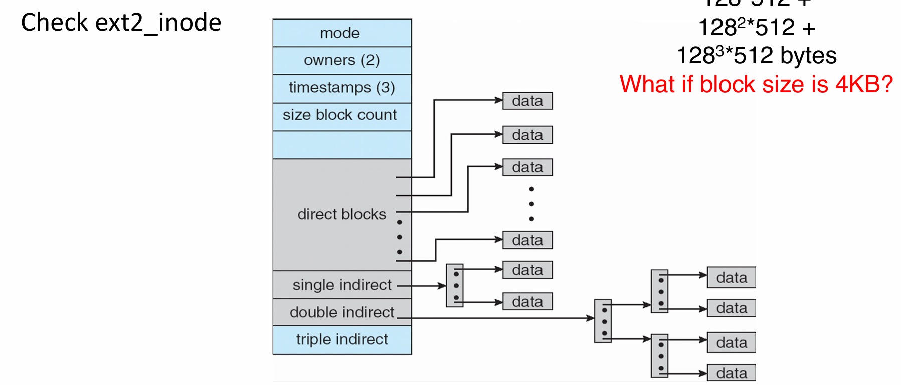
File system operations
File creation()
- Logical file system allocates a new FCB, i.e., inode structure
- Appropriate directory is updated with the new file name and FCB
File open()
Search system-wide open-file table to see if file is currently in use
- If it is, create a per-process open-file table entry pointing to the existing system-wide open-file table
- If it is not, search the directory for the file name; once found, load the FCB from disk to memory and place it in the system-wide open-file table
- 在 per-process open-file 里加入 entry，指向 system-wide open-file table 的 entry（and other fields，disk location、访问模式
- Increment the open count in the system-wide open-file table
- Returns a pointer to the entry in the per-process open-file tabl
- All subsequent operations are performed with this pointer
- Process closes file -> per-process open-file table entry is removed; open count decremented
- All processes close file -> copy in-memory directory information to disk and system-wide open-file table is removed from memory
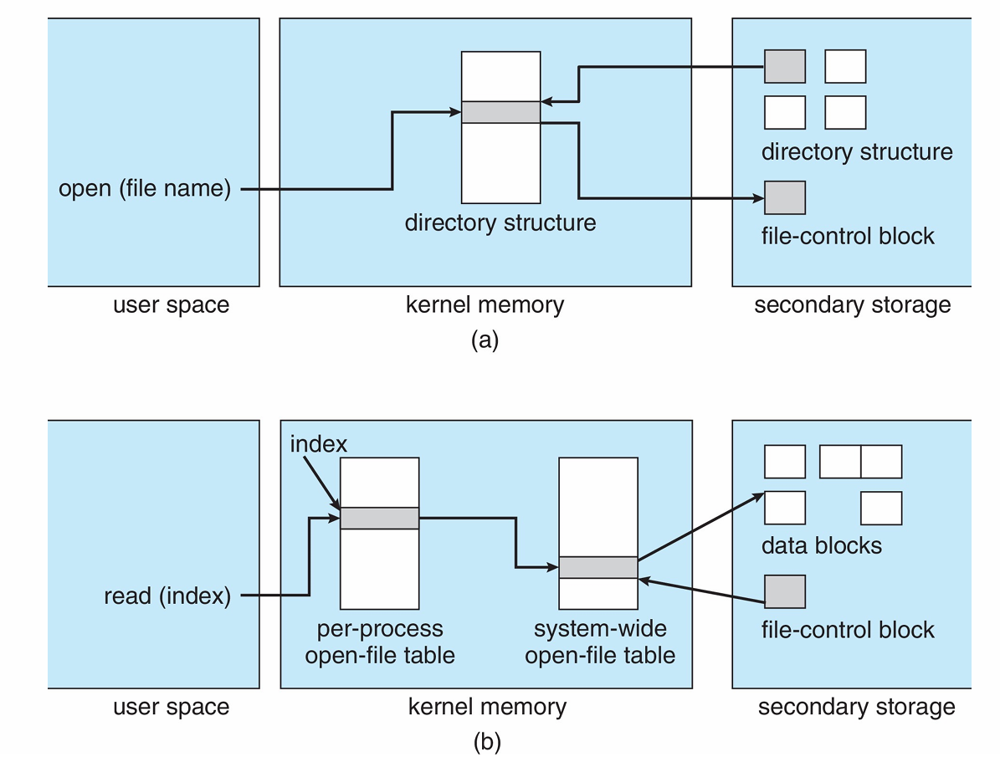
Virtual File System(VFS)
统一接口被实例化成具体的操作
Mounting File Systems
- Boot Block – series of sequential blocks containing a memory image of the boot loader, that locates and mounts the root partition; the partition contains the kernel; the boot loader locates, loads, and starts the kernel executing
- In-memory mount table – external file systems must be mounted on devices, the mount table records the mount points, types of file systems mounted, and an access path to the desired file system
- Unix –the in-memory mount table contains a pointer to the superblock of the file system on that device
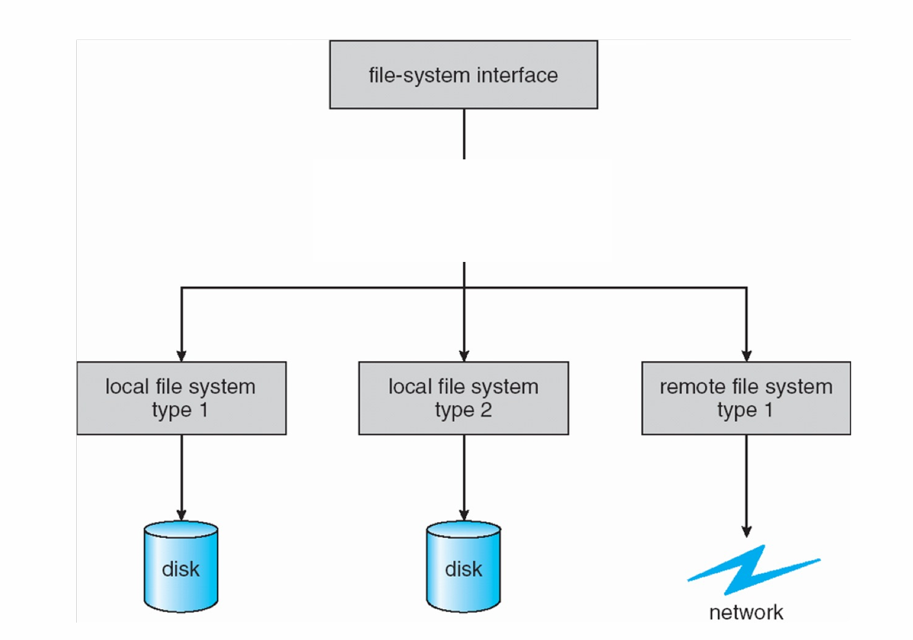
- VFS 提供了一个面向对象的方式实现文件系统
- OS defines a common interface for FS, all fses implement them
- System call is implemented based on this common interface (same syscall API to be used for different types of FS)
- 把 FS operation 与实际操作分开
- Implementation can be one of many FS types, or network file system
- OS can dispatches syscalls to appropriate FS implementation routines
Linux defines four VFS object types:
- superblock: defines the file system type, size, status, and other metadata
- inode: contains metadata about a file (location, access mode, owners…)
- dentry: associates names to inodes, and the directory layout
- file: actual data of the file
Write syscall -> vfs_write -> indirect call -> ext4_file_write_iter
Directory Implementation
WIN: Directory != file
Linux: Directory = file
Directory inode
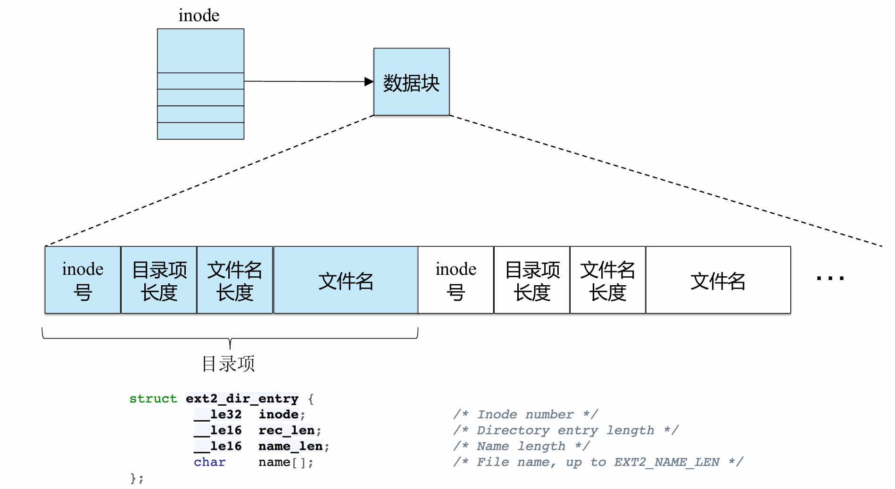
大小 4 B 对齐
home/std/a
- name[] = a
- name_len = 1
- rec_len = 4+2+2+1 = 9
- 结构体大小 12 B - reuse
目录中怎样存放
- Linear list of file names with pointer to the file metadata
- Simple to program, but time-consuming to search (e.g., Linear search)
- Could keep files ordered alphabetically via linked list or use B+ tree
- Hash table: linear list with hash data structure to reduce search time
- Collisions are possible: two or more file names hash to the same location
Allocation Methods
Files need to be allocated with disk blocks to store data, Different allocation strategies have different complexity and performance
Contiguous
- 优点 - 找到下一个很快（sequential access causes little disk head movement
- 目录记载第一个块的位置和块的长度
- 缺点
- hard to extend
- Can be difficult to find free space（Best Fit, First Fit, etc.
- External fragmentation
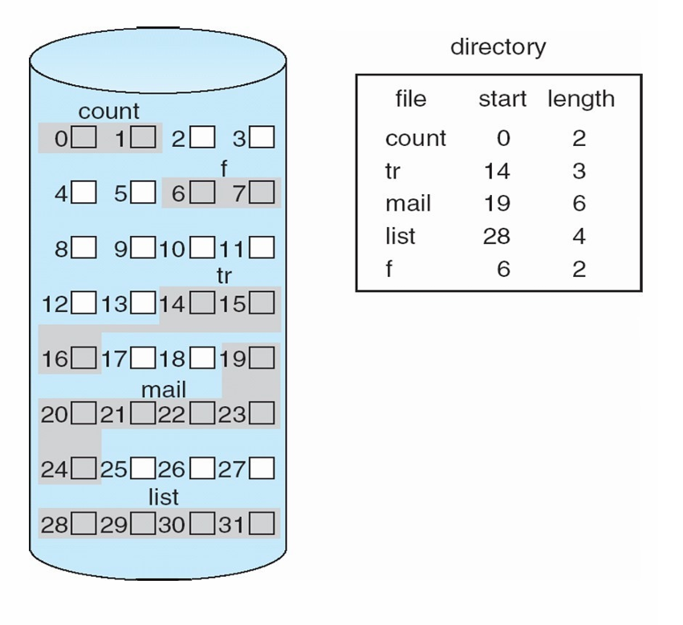
linked
- 优点 - easy to extension
- 缺点
- 一旦断了后面都会丢
- Locating a file block can take many I/Os and disk seeks
- Pointer size: 4 of 512 bytes are used for pointer - 0.78% space is wasted
- 改进 - 四个为一组
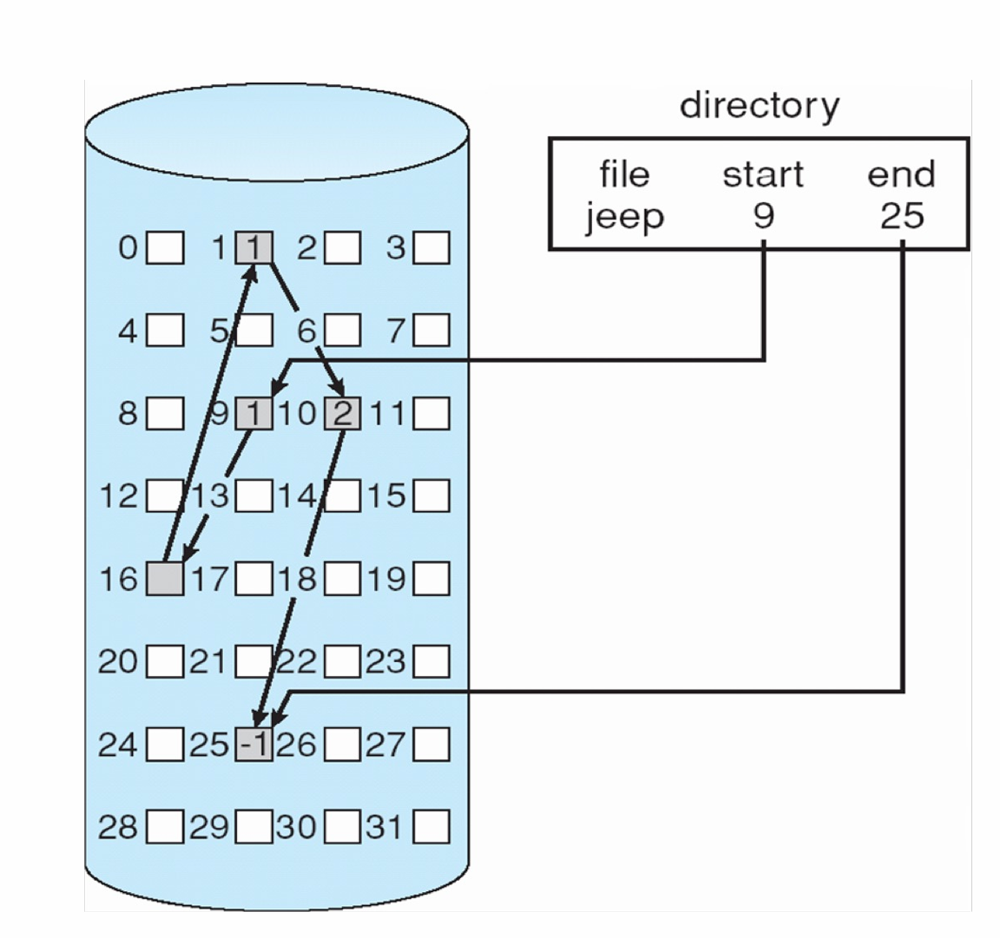
indexed
each file has its own index blocks of pointers to its data blocks
- Index table provides random/direct access to file data blocks
- No external fragmentation, but overhead of index blocks
- Allows holes in the file
- Index block needs space - waste for small files
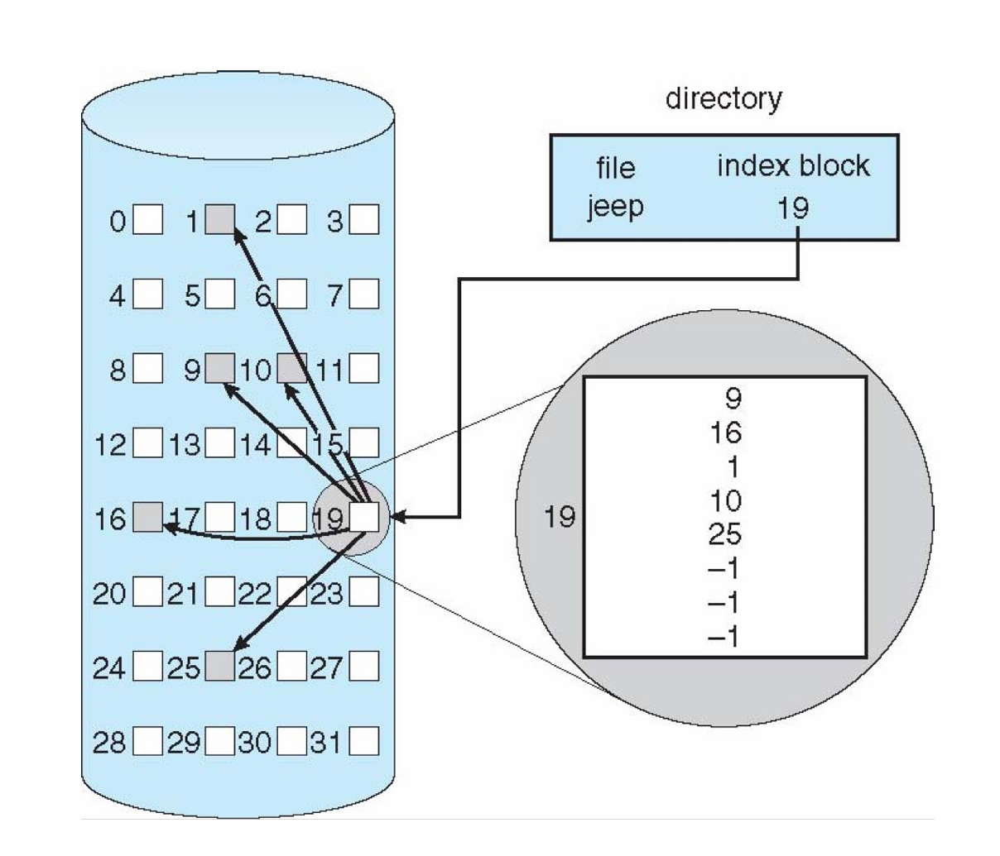
- Need a method to allocate index blocks - cannot too big or too small
- Linked index blocks: link index blocks to support huge file
- Multiple-level index blocks (e.G., 2-level)
会算大小
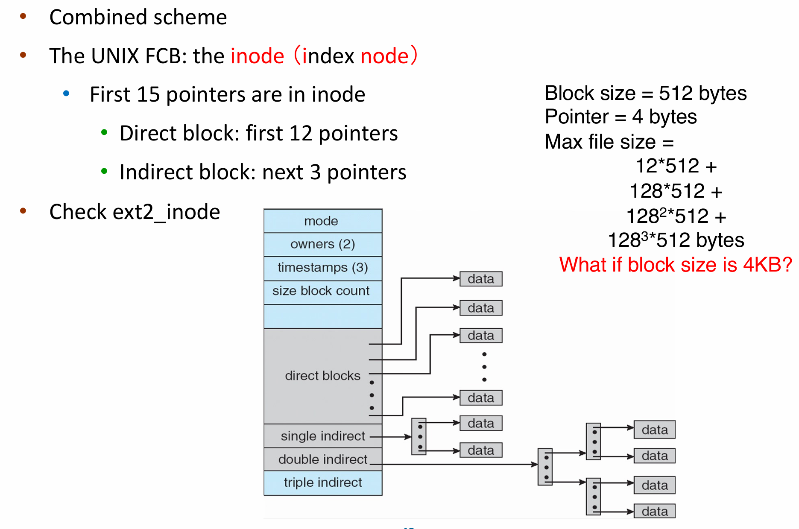
Summary
- Best allocation method depends on file access type
- Contiguous is great for sequential and random
- Linked is good for sequential, not random
- Indexed (combined) is more complex
- Single block access may require 2 index block reads then data block read
- Clustering can help improve throughput, reduce CPU overhead
- Cluster is a set of contiguous blocks
- Disk I/O slow, 需要尽可能减少
Free-Space Management
Bitmap Free-Space Management
- Use one bit for each block, track its allocation status
- 相对容易找到连续空间
- requires extra space
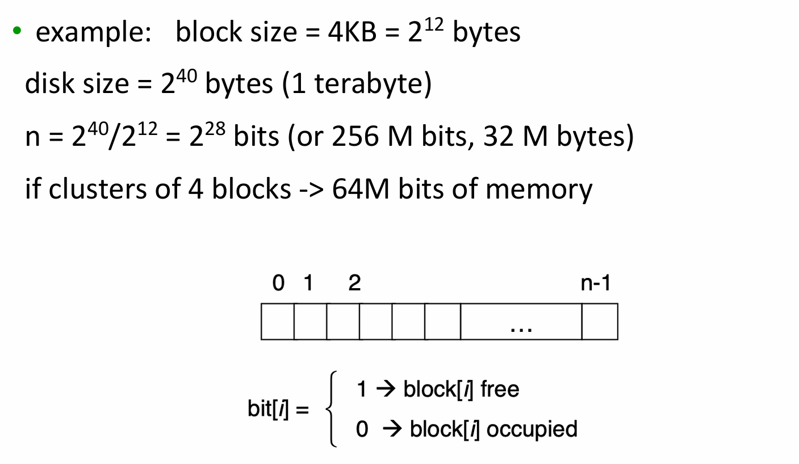
Linked Free Space
- Keep free blocks in linked list
- 优点 - 找到下一个很快
- 缺点 - 很难找到连续空间（require traverse the list），一个丢了后面全没
Grouping & Counting
- Grouping: use indexes to group free blocks
- Store address of n-1 free blocks in the first free block, plus a pointer to the next index block
- Allocating multiple free blocks does not need to traverse the list
- Counting: a link of clusters (starting block + # of contiguous blocks)
- Space is frequently contiguously used and freed
- In link node, keep address of first free block and # of following free blocks
File System Performance
File system efficiency and performance dependent on:
- Disk allocation and directory algorithms
- Types of data kept in file’s directory entry
- Pre-allocation or as-needed allocation of metadata structures
- Fixed-size or varying-size data structures
To improve file system performance:
- Keeping data and metadata close together
- Use cache: separate section of main memory for frequently used blocks
- Use asynchronous writes, it can be buffered/cached, thus faster
- Cannot cache synchronous write, writes must hit disk before return
- Synchronous writes sometimes requested by apps or needed by OS
- Free-behind and read-ahead: techniques to optimize sequential access - remove the previous page from the buffer, read multiple pages ahead
- Reads frequently slower than write: really?
Page Cache
- A page cache caches pages for MMIO, such as memory mapped files
- File systems uses buffer (disk) cache for disk I/O
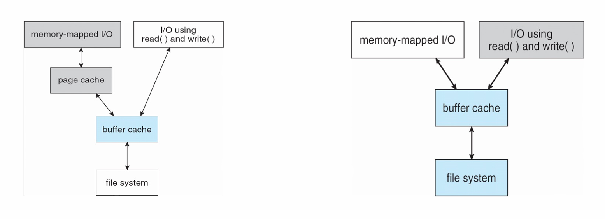
Recovery & log
File interfaces
Tow Key Abstration
- File Has a low-level name (user does not know) - inode number
- Directory - contains a list of user-readable name to low level name (translation from external to internal name)
int fd = open("foo", O_CREAT | O_WRONLY | O_TRUNC);
// O_CREAT: create the file if not exists (not O_CREATE)
// O_WRONLY: can only write to the file
// O_TRUNC: if the file exists, truncate it to zero bytes
返回值 - File Descriptor
- File Discriptor - index per-process open file table
- 0 - stdin
- 1 - stdout
- 2 - stderr
- 其他文件只能拿到 >=3 的标号
int fd = open ("foo", _CREAT | O_WRONLY | O_TRUNC);
assert (fd >-1);
int rc = write (fd, buffer, size);
assert (rc == size) ;
rc = fsync (fd) ; // forces all dirty (not yet written) data to disk
assert (rc == 0) ;
Directory
Hard link vs soft link
A file may be known by more than one name in one or more directories. Such multiple names are known as links.
- hard link
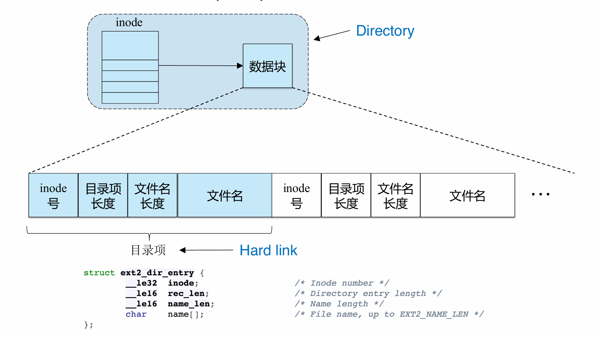
- 目录项
- inode 一样
- rm、ls 的对象是 hard link 而不是文件
- . & .. 都是 hardlink
- link() system call: system call takes two arguments, an old pathname and a new one
- removing a file calls unlink
- soft link
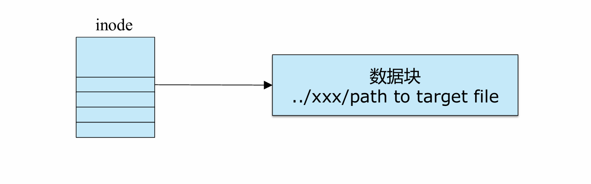
- 文件
- inode 不一样
- 创建一个新文件，存放指向源文件的 path
- rm the target file, the link will be invalided
- 可以跨文件系统
read /foo/bar
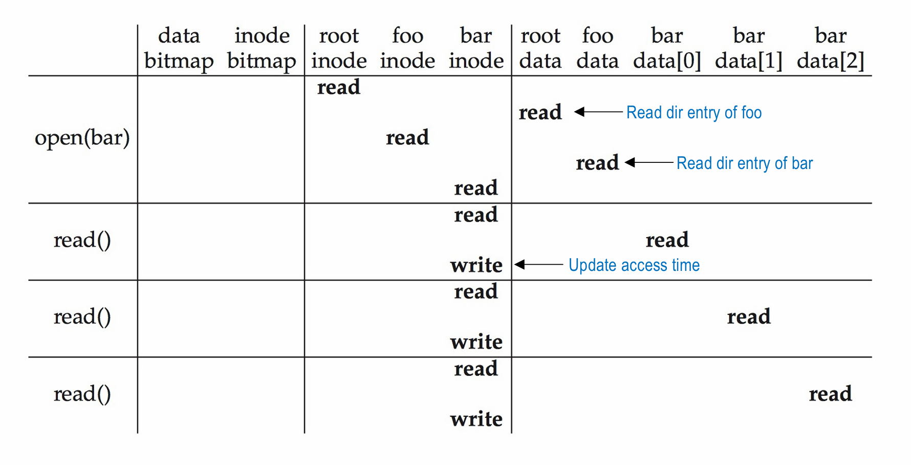
Write to Disk: /foo/bar
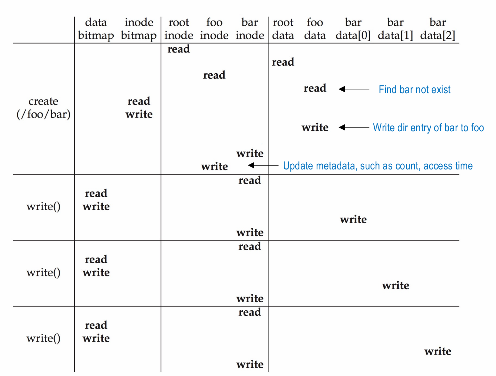
On-disk layout of FS
- VFS data structure - inode
- In-memory data structure - ext2_inode_info
- Contain both ext2_inode and inode
- On-disk data structure - ext2_inode
Superblock * Contains information about this file system: how many inodes/data blocks, where the inode table begins, where the data region begins, and a magic number
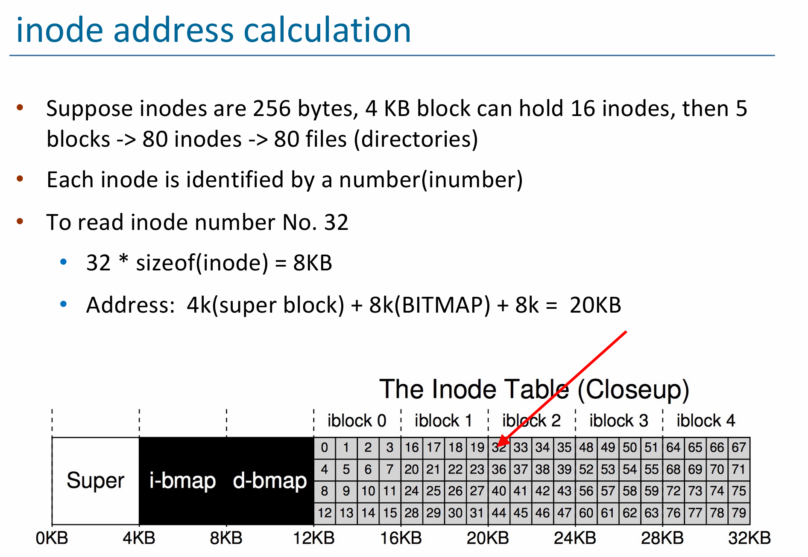
Caching and Buffering
- Without caching, each file open would require two reads for each level of the directory
- One for the inode, and one for data
- Early system allocate a fixed-size cache to hold popular blocks
- Modern systems use a unified page cache for both virtual memory pages and file system pages
- Write buffering: does not write to disk immediately, instead sync to disk for like 5 - 30 seconds
- Database: direct IO with raw data